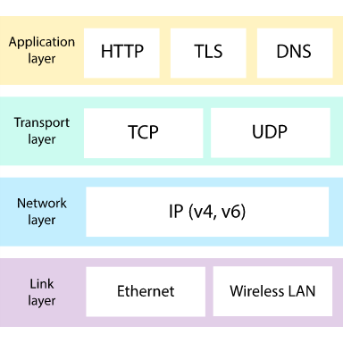

ACAD 275: Dev I
Iovine and Young Academy
ACAD 275: Dev I
The Internet and World Wide Web
Aaron Siegel | | 8/23/2022
The Internet

Internet Protocol
The syntax used to send data packets over the network.
Servers
A computer running software to perform services and provide content to clients.
Clients
Your computer, or other users, accessing services and data over the network.
Routers
Devices that move data packets between networks to get from sender to recipient.
World Wide Web
HTTP
Hypertext Transfer Protocol is the syntax computers use to communicate requests between a client and a server.
HTML
Hypertext Markup Language is used to structure content for the world wide web.
Web Server
Web Servers run software to provide files to client computers requesting a web address.
Web Browser
A software application users run on their computer to load content from web servers.
History of the Internet
Tools for Web Publishing
HTML is for Structure
HTML allows you to define how your content is structured within your page.
CSS is for Style
CSS allows you to style the appearance of the content within your page.
JavaScript is for Behavior
JavaScript allows you to program the behavior and interactivity of the content within your page.